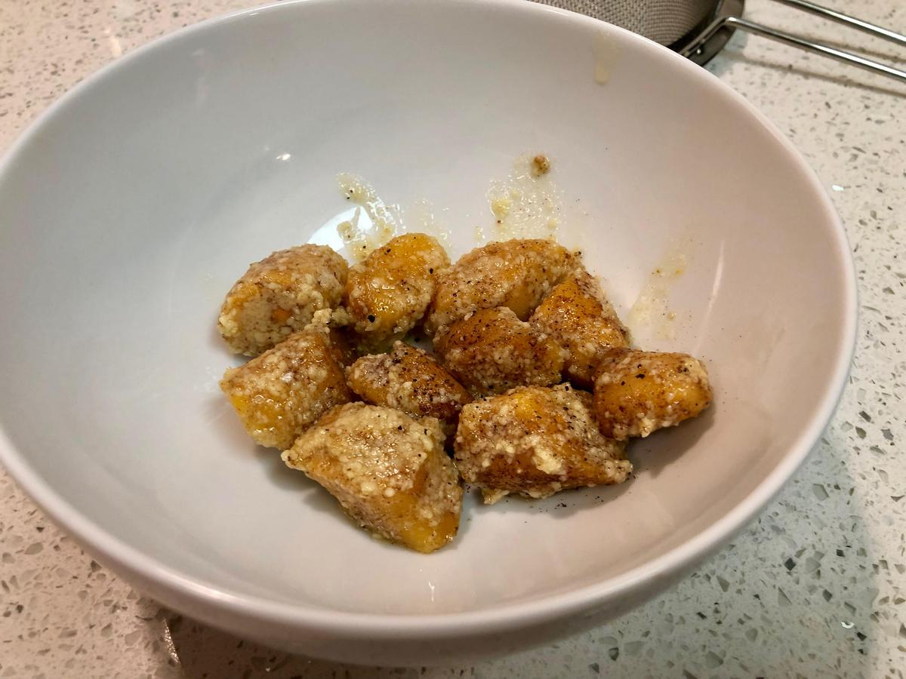

Based on Chrissy Teigen Cravings, pg. 176
Personal rating: 2 / 5

1 large sweet potato
1/3 cup whole milk ricotta cheese
3/4 cup flour
1 tsp salt
1/4 tsp black pepper
2/3 stick butter
1/4 cup fresh sage leaves, chopped or 2-4 tsp of ground
1/2 cup finely grated Parmesan
salt and pepper
Scrub the sweet potato, then cook in an Instant Pot on high pressure and low temperature for 15 min. Quick release after at least 5 min
Peel and mash the soft potato in a medium bowl
Mix with the ricotta cheese, 3/4 cup flour, salt and pepper. Gently mix until a dough like texture. If sticking to the sides, add additional flour, 1 Tbsp at a time
Bring a gallon of water to boil over high heat
Lightly flour a large cutting board. Gently knead the dough by flattening with your palms than folding the dough in the perpendicular direction rotating 90 degrees each time
Divide the dough into three equal pieces; gently roll each into a ball then into a log roughly 12 in x 1 in diameter
Cut the logs crosswise/diagonally into 12 pieces (36 total)
Drop the gnocchi into the boiling water and stir for the first minute. Cook until they float to the surface (4-5 min)
In parallel, in a large skillet, melt the butter over medium heat. When the foam subsides add the sage. Cook until the sage is crispy and the butter is browned (3 min)
Scoop the gnocchi out with a strainer and add to the skillet. Add the Parmesan and salt and pepper to taste